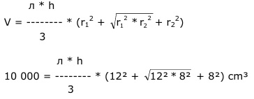

Aufgabe 258 Wie groß sind die Höhe h und der Mantel M eines geraden Kegelstumpfes, wenn der kleinere Radius 8 cm, der größere 12 cm und sein Volumen 10 l beträgt? Kegelhöhe h: 10 l = 10 000 cm³  л * h 10 000 = ------- * (144 + 12 * 8 + 64) cm³ 3 л * h 10 000 = ------- * 304 cm³ |*3 3 30 000 = л * h * 304 cm³ |:304 30 000 -------- = л * h cm |:л 304 30 000 h = --------- cm = 31,4 cm л * 304 Kegelmantel M: s = Mantellinie: Satz von Pythagoras: s² = h² + (12 cm - 8 cm)² s² = 31,4² cm² + 4² cm² = 1 002 cm² |√ s = 31,65 cm M = л * s * (12 cm + 8 cm) M = л * 31,65 cm * 20 cm = 1 987,6 cm²